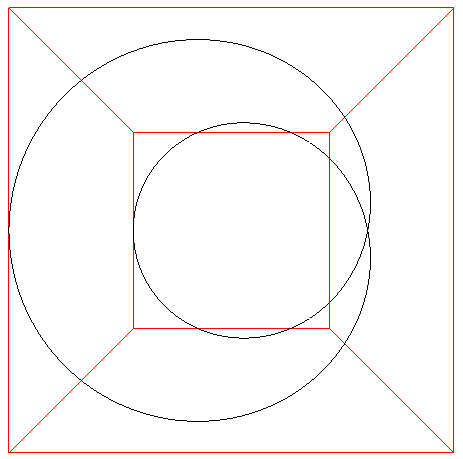

Viviani Curve
By
Paul Bourke
January 2001
x = r (1 + cos(t))
y = r sin(t)
z = 2 r sin(t/2)
-2 pi < t < 2 pi

Intersection curve of the cylinder (x - r)
2
+ y
2
= r
2
and the sphere x
2
+ y
2
+ z
2
= (2 r)
2
.